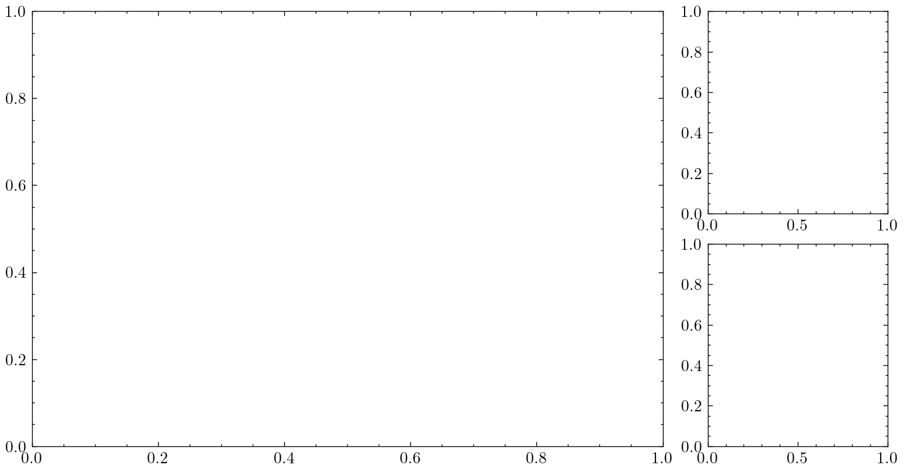
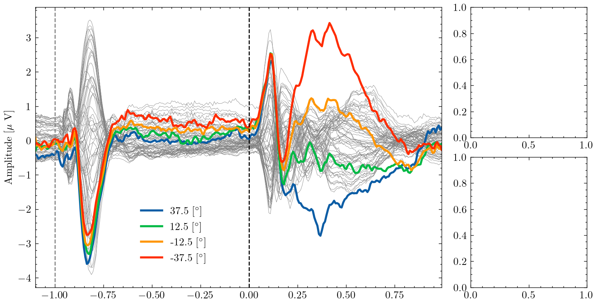
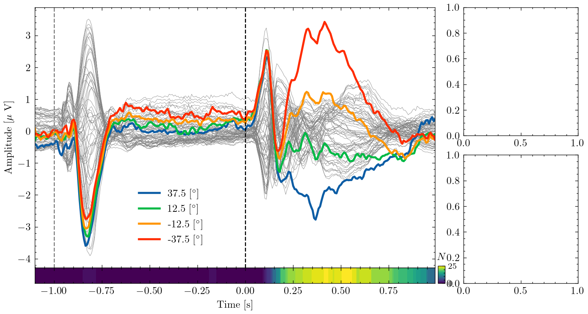
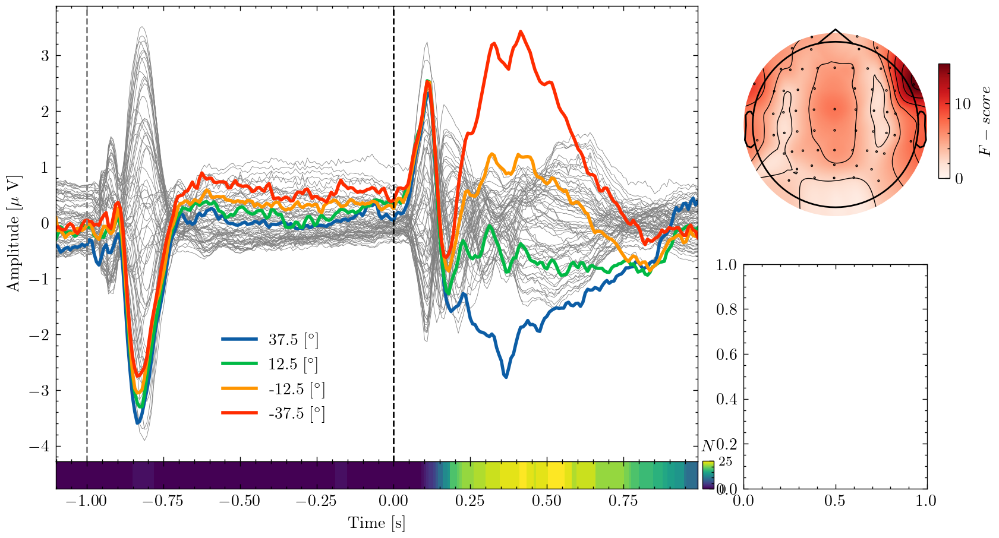
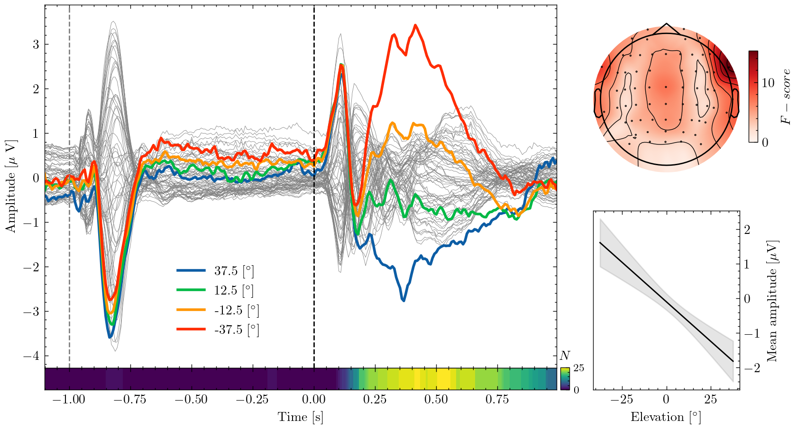
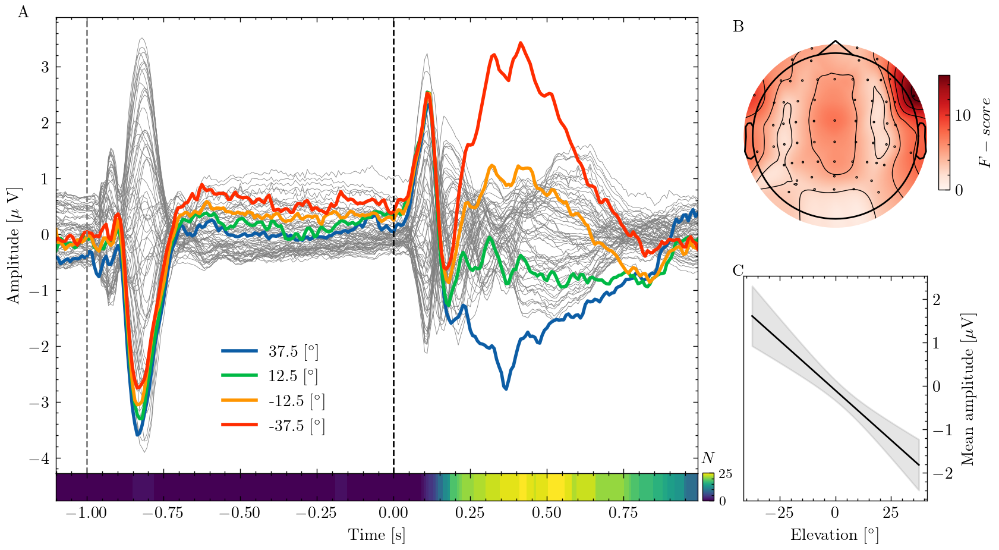

Making publication-ready figures with Matplotlib

“An image says more than a thousand words” is a platitude, but when it comes to communicating the results of your research it is definitely true. Figures are probably the most important part of a paper and most readers will first look at them before reading the text in detail. In this blog post I’ll show how to use the Python library Matplotlib for creating publication-ready figures. For this purpose I’ll reproduce a figure from a recent paper step-by-step.
Prerequisites⌗
In this blog post I will use the Python library Matplotlib and reproduce the figure in the title step-by-step. If you want to follow along, you can download the data by clicking here or use Python to fetch it:
pip install matplotlib numpy mne
The package mne is only required to draw the scalp map (a common visualization in EEG research) in panel B of the figure.
If you don’t want to reproduce that subplot, you may skip installing mne.
You’ll also need the data which you can download by clicking here or fetch using Python:
import requests
from io import BytesIO
import numpy as np
response = requests.get("https://olebialas.github.io/example_data.npy")
d = np.load(BytesIO(response.content), allow_pickle=True).item()
Data⌗
The data contains the neural activity, and some derived statistics, of participants who localized sounds played from different locations. Because this blog post focuses on visualization, I’ll not explain the scientific details. If you are interested you may have a look at the paper. Let’s look at the content of our data by printing the dictionary’s keys and the shape of the array stored under them:
for key, value in d.items():
print(f"{key}: {value.shape}")
times: (269,)
eeg_avg: (269, 64)
eeg_con: (269, 4)
con: (4,)
ch_f: (64,)
ch_loc: (64, 2)
n_sig: (269,)
line_y: (10000, 100)
line_x: (100,)
timesis a vector of time points at which the EEG data are sampledeeg_avgis a matrix with the average EEG recording of each channeleeg_concontains the recording of a single channel for each condition.constores the conditions (i.e. the elevation of the different sound sources)ch_fandch_loccontain the F-values (a statistic indicating the separation of responses to the different conditions) and x,y coordinates for each EEG channel.n_sigcontains the number of subjects for which a statistical test found a significant difference between conditions at each point in time.line_ycontains samples from a linear model for the relationship between sound source elevation and neural response amplitudeline_xcontains the x-coordinates (i.e. elevations) the values where sampled at
Style templates⌗
Matplotlib is great, but the default style is not exactly pleasing to the eye.
Fortunately there are some fantastic templates that you can use instead.
I like to use “SciencePlots” which has an elegant and professional look and even offers the option to emulate the style of several academic journals.
To use the style template, install it as a package with pip install SciencePlots, import it and set it as Matplotlib’s style:
from matplotlib import pyplot as plt
import scienceplots
plt.style.use('science')
Subplot spacing⌗
I want to allocate most of the figure’s space to the time series data in panel A, while the scalp map in B and the regression line in C can smaller.
We can create subplots of different size using the subplot_mosaic() function.
This function takes a nested lists of strings where each unique string represents one subplots and it’s repetitions define the fraction of the figure that subplot occupies.
Its a good idea to use capital letters because we can use those later to label the panels.
fig, ax = plt.subplot_mosaic(
[
["A", "A", "A", "B"],
["A", "A", "A", "C"],
],
figsize = (8, 4.5)
)
plt.subplots_adjust(wspace=0.25, hspace=0.15)
This creates a figure where panel A spans two rows and three columns while B and C only occupy a single element.
The function subplots_adjust changes the spacing by adjusting the width (wspace) and height (hspace) of subplots’ padding.

Highlighting what’s important⌗
Let’s plot the time series data to panel A. First I plot the average EEG for each recorded channel in gray with small line width. Next, I iterate through the four experimental conditions and plot each one individually which makes Matplotlib use a different color for each. Using gray and colors as well as different line width is a good way of giving a detailed overview of the data while highlighting important aspects.
ax["A"].plot(d["times"], d["eeg_avg"], color="gray", linewidth=0.3)
for i_con in range(d["eeg_con"].shape[1]):
ax["A"].plot(
d["times"], d["eeg_con"][:, i_con],
linewidth=2, label=f"{d['con'][i_con]} [$^\circ$]"
)
ax["A"].legend(loc=(0.25, 0.07))
ax["A"].set(ylabel="Amplitude [$\mu$ V]", xlim=(d["times"].min(), d["times"].max()))
By labeling each conditions line with the respective sources elevation, we can create an informative legend. The last line is labeling the y-axis and adjusting the x-axis to the recorded time interval. Putting dollar signs around string, tells Matplotlib to render them with LateX which allows us to use equations and special symbols like Greek letters. If you don’t have a LateX installed, you’ll have to change those strings.
Marking time points⌗
In the experiment, participants heard two subsequent sounds.
Let’s mark the sound onsets so we can see how the neural response relates to the stimuli.
The .axvline() method takes a point on the x-axis and draws a vertical line between ymin and ymax. Here, x is in data coordinates (i.e. seconds) while the y coordinates are expressed as a fraction of the axis.
ax["A"].axvline(x=0, ymin=0, ymax=1, color="black", linestyle="--")
ax["A"].axvline(x=-1, ymin=0, ymax=1, color="gray", linestyle="--")

Adding subplots⌗
In the study, we ran a statistical test for differences between the responses to the different sound sources at each point in time.
I want to visualize the number of participants for whom the test found a significant result using a heat map.
To do this, we can use the makes_axes_locatable() function which returns an AxesDivider that allows us to split off a new subplot
from mpl_toolkits.axes_grid1 import make_axes_locatable
divider = make_axes_locatable(ax["A"])
new_ax = divider.append_axes("bottom", size="6%", pad=0)
This adds a subplot to the bottom of panel A whose size is equal to six percent of the original subplot and adds it to the ax dictionary. Now we can plot our heat map to the new subplot.
extent = [d["times"].min(), d["times"].max(), 0, 1]
im = new_ax.imshow(d["n_sig"], aspect="auto", extent=extent)
new_ax.set(xlabel="Time [s]", yticks=[])
The images extent are the data coordinates that the image will fill and setting the aspect="auto" allows non-square pixels to fit the axis.
Now the heat map needs a color bar that explains what the colors represent.
The color bar should be short and tucked to the side of the heat map.
The most easy way to create a subplot is to directly define its location.
The add_axis() method takes as inputs the x and y coordinate of the new subplot’s left bottom corner and its width and height relative to the whole figure.
After creating the subplot we can use the colorbar() function on the image returned by imshow(). Finally, we can adjust the font and tick size.
cax = fig.add_axes([0.7, 0.11, 0.01, 0.048])
fig.colorbar(im, cax=cax, orientation="vertical", ticks=[0, d["n_sig"].max()])
cax.set_title("$N$", fontsize="medium")
cax.tick_params(labelsize=8)

The downside of manually positioning the color bar is that you have to try around to find the right coordinates. This can be made a little easier using Matplotlib’s interactive mode by calling plt.ion().
In interactive mode, all plotting commands are immediately executed so you can see where an object is located.
Hiding the axis⌗
The scalp plot in panel B doesn’t need the surrounding axes. We can turn them off before plotting. Then we can create the scalp map, using a function from the MNE toolbox and add a color bar just as we did before.
from mne.viz import plot_topomap
im, _ = plot_topomap(d["ch_f"], d["ch_loc"], show=False, axes=ax["B"])
cax = fig.add_axes([0.91, 0.65, 0.01, 0.2])
cbar = fig.colorbar(im, cax=cax, orientation="vertical")
cbar.set_label("$F-score$")

Displaying uncertainty⌗
Panel C contains samples from a linear model which describes the relationship between neural response amplitude and sound elevation. The regression model was computed 10k times using bootstrapping and the variability across these models indicates the uncertainty surrounding the estimated relationship.
We can visualize this uncertainty by shading an area around the mean of all models. Here, I use +/- two standard deviations which encompasses 99.7% of all observed values. Setting the opacity alpha to a low level creates a shade rather than solid color.
mean, std = d["line_y"].mean(axis=0), d["line_y"].std(axis=0)
ax["C"].plot(d["line_x"], mean, color="black")
ax["C"].fill_between(d["line_x"], mean + 2 * std, mean - 2 * std, alpha=0.1, color="black")
ax["C"].set(ylabel="Mean amplitude [$\mu$V]", xlabel="Elevation [$^\circ$]")
Finally, we can move the y-axis ticks and label to the right so it does not overlap with other subplots
ax["C"].yaxis.tick_right()
ax["C"].yaxis.set_label_position("right")

Labeling subplots⌗
The only thing left to do is labeling the panels so we can refer to them in text.
One practical option is to use the keys from the ax dictionary as labels and put them at the same location relative to each axis.
Because the text() method treats x and y values as data coordinates per default, we have to use the transAxes transform.
for label in ax.keys():
if label.isupper():
ax[label].text(-0.06, 1, label, transform=ax[label].transAxes, font='bold')

Saving⌗
When saving the figure as an image, make sure to use a sufficiently high number of dots per inches (dpi) so it looks nice printed.
Also, don’t change the image’s height or width after saving the image because it will make the font size vary across figures.
Instead use the figsize attribute to create figures of the desired size.
It is possible to remove the margins by setting bbox_inches="tight" but be aware that this may change the defined figsize.
fig.savefig('awesome_figure.png', dpi=300, bbox_inches='tight'
Now the figure is ready for publication!